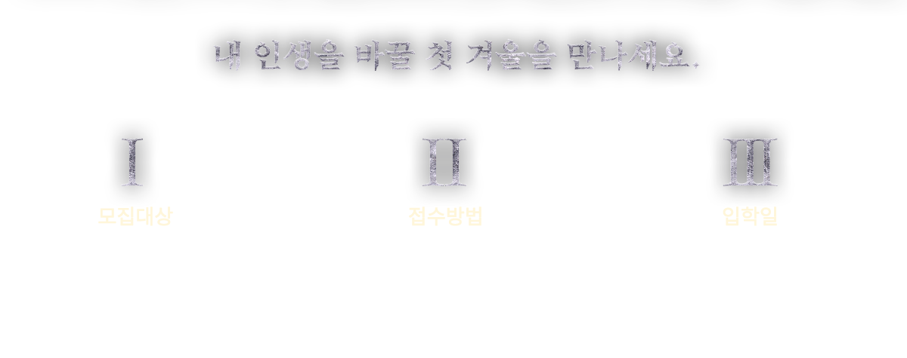
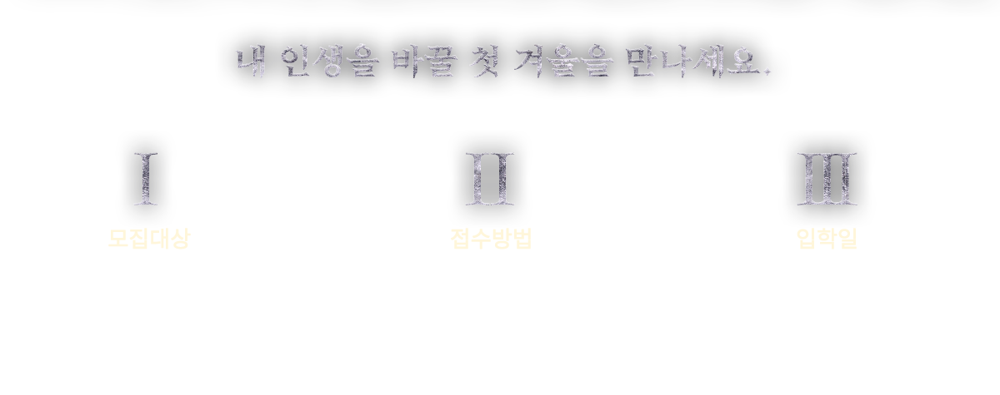
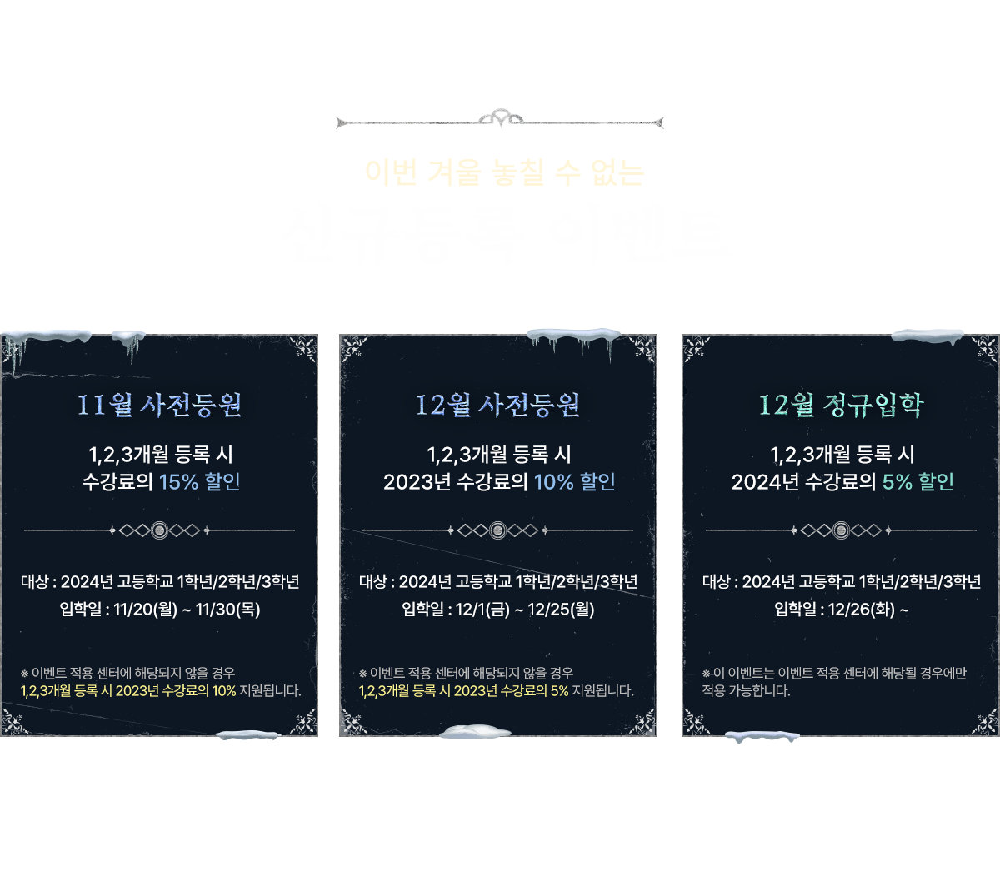

● 이벤트 적용 센터 리스트
광주 봉선센터 / 광주 수완센터 / 광주 충장로센터 / 구리 수택센터 / 김포센터 / 김해센터 / 노량진센터 1관 / 노량진센터 2관 / 대구 동성로센터 / 대구 상인센터 / 대구 시지센터 / 대구 월성센터 / 대전 유성센터 / 마산센터 / 부산 화명센터 / 부산대센터 / 부천센터 1관 / 부천센터 2관 / 분당 수내센터 / 분당 이매센터 / 서울대센터 / 양산센터 / 용인 수지센터 2관 / 원주센터 / 의정부센터 / 인천 논현센터 / 인천 연수송도센터 1관(연수동) / 전주 송천센터 / 전주 전북대센터 / 전주 중화산센터 / 진주센터 / 창원 상남센터 1관 / 창원 상남센터 2관 / 청주센터 / 춘천센터 / 파주센터 / 평택센터 / 포항센터


-
※ 최종 업데이트 : 2023년 3월 20일 오전 11시 기준 오프라인, 온라인 합산 10,072장
※ 본 결과는 최종 합격증을 기준으로 집계하였으며, 지속적으로 업데이트될 예정입니다.
※ 본 명단은 중복 합격 표기가 적용되어 있습니다.
※ 타 학원 합격증 노출 상황에 따라 변경될 수 있습니다.
※ 모든 통계는 소수점 첫째 자리에서 반올림한 수치입니다.
-
1) 합격증 수
- 오프라인 합격증 수 (9,698장), 온라인 합격증 수 374장 (캠스터디 159장, 잇올 랩 215장)
2) 합격증 : 합격증 및 합격을 증빙할 수 있는 모든 디지털 자료 포함